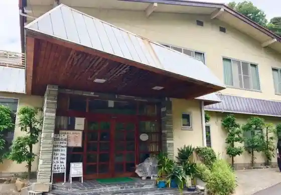
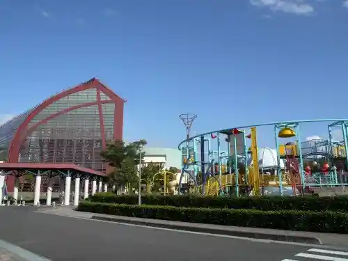
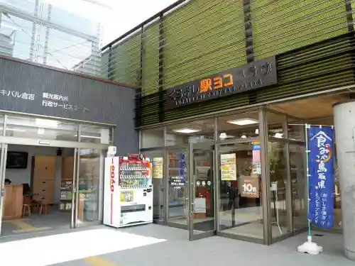
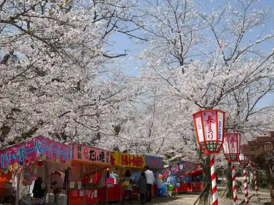

Kurayoshi Shirakabe Dozo Gun
Kurayoshi, Tottori · 0858-22-1200 · Official / source link
Sekigane Onsen
Kurayoshi, Tottori · 0858-24-5371 · Official / source link

Kurayoshi Park Sukuea
Kurayoshi, Tottori · 0858-47-1181 · Official / source link

Kurayoshi Eki Yoko Plaza
Kurayoshi, Tottori · Official / source link

Utsubuki Park
Kurayoshi, Tottori · 0858-22-1200 · Official / source link

Suiito Land TAKARA
Kurayoshi, Tottori · 0858-48-7070 · Official / source link
Seiryu Yu YOU Mura
Kurayoshi, Tottori · 0858-45-2900 · Official / source link
Sekigane Wasabi Ta
Kurayoshi, Tottori · 080-7500-0245 · Official / source link
Tottori Nijusseiki Nashi Memorial Museum (Nashikko Kan)
Kurayoshi, Tottori · 0858-23-1174 · Official / source link
Fukutomi Shrine
Kurayoshi, Tottori · 0858-22-1200 · Official / source link
Kamo Shrine
Kurayoshi, Tottori · 0858-22-4479 · Official / source link
Oyama Ike
Kurayoshi, Tottori · 080-7500-0245 · Official / source link
Akagawara
Kurayoshi, Tottori · 0858-23-6666 · Official / source link
Gokuraku Tera
Kurayoshi, Tottori · 0858-22-1200 · Official / source link
Todai Yama Bridge
Kurayoshi, Tottori · 0858-24-5371 · Official / source link
Kyukokutetsu Kurayoshi Sen Haisen'ato Namikimichi
Kurayoshi, Tottori · 0858-22-1200 · Official / source link
Fuku Seki Shrine
Kurayoshi, Tottori · 0858-22-1200 · Official / source link
Yamamori Onsen Campground
Kurayoshi, Tottori · 0858-45-1100 · Official / source link
Kamei Park
Kurayoshi, Tottori · 0858-24-5371 · Official / source link
Kurayoshi Yodo Ya
Kurayoshi, Tottori · 0858-22-4419 · Official / source link
Man Sei Tera
Kurayoshi, Tottori · 0858-22-3468 · Official / source link
Nashi Sofuto
Kurayoshi, Tottori · Official / source link
Ege Tanigawa no Sakura Namiki
Kurayoshi, Tottori · Official / source link
Nami Nami Ki Shrine
Kurayoshi, Tottori · 0858-24-5371 · Official / source link
Otake In
Kurayoshi, Tottori · 0858-22-4541 · Official / source link
Hase Tera
Kurayoshi, Tottori · 0858-22-3272 · Official / source link
Dai Hasu Tera
Kurayoshi, Tottori · 0858-22-3393 · Official / source link
Roadside Station Inu Kyo
Kurayoshi, Tottori · 0858-45-1313 · Official / source link
Sekigane Onsen no Ashiyu
Kurayoshi, Tottori · 0858-45-3737 · Official / source link
Ue Kami Yaki Togei Kyoshitsu
Kurayoshi, Tottori · 0858-22-8389 · Official / source link
Kanu Boto Experience
Kurayoshi, Tottori · 0858-28-6322 · Official / source link
Kurayoshi Kasuri Demachi Aruki
Kurayoshi, Tottori · 0858-24-5371 · Official / source link
Hakota Ningyo no Kao Egaki
Kurayoshi, Tottori · 090-1185-9732 · Official / source link
Kurayoshi Shirakabe Dozo Gun Sansaku
Kurayoshi, Tottori · 0858-22-1200 · Official / source link
Kurayoshi Kasuri
Kurayoshi, Tottori · 0858-23-2255 · Official / source link
Sekigane Yu Inochi Kan
Kurayoshi, Tottori · 0858-45-2000 · Official / source link
Machiya Shimizu Iori
Kurayoshi, Tottori · 0858-22-4759 · Official / source link
Kurayoshi Museum Folk Museum
Kurayoshi, Tottori · 0858-22-4409 · Official / source link
Kyukokutetsu Kurayoshi Sen Haisen'ato Torekkingu
Kurayoshi, Tottori · 0858-24-5371 · Official / source link
COUP!La Café (Kurakafe)
Kurayoshi, Tottori · 0858-22-8675 · Official / source link
Toyoda Ie House
Kurayoshi, Tottori · 0858-23-0440 · Official / source link
Gensui
Kurayoshi, Tottori · 0858-22-5020 · Official / source link
Yashio
Kurayoshi, Tottori · 0858-28-0821 · Official / source link
Kore Kun
Kurayoshi, Tottori · 0858-23-1511 · Official / source link
Yukata Demachi Aruki
Kurayoshi, Tottori · 0858-24-5371 · Official / source link
Tottori Prefectural Art Museum
Kurayoshi, Tottori · 0858-24-5442 · Official / source link
Enkeigekijo Kurayoshi Figyua Museum
Kurayoshi, Tottori · 0858-27-1200 · Official / source link
Barukosu
Kurayoshi, Tottori · 0858-27-0440 · Official / source link
Kurayoshi Yakusho
Kurayoshi, Tottori · 0858-22-8111 · Official / source link